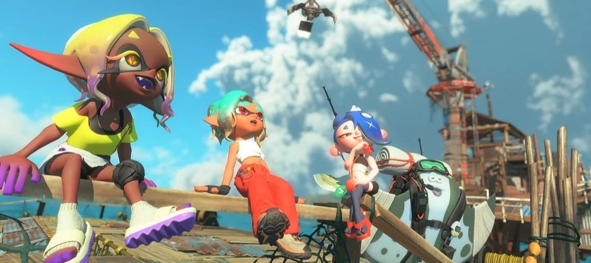
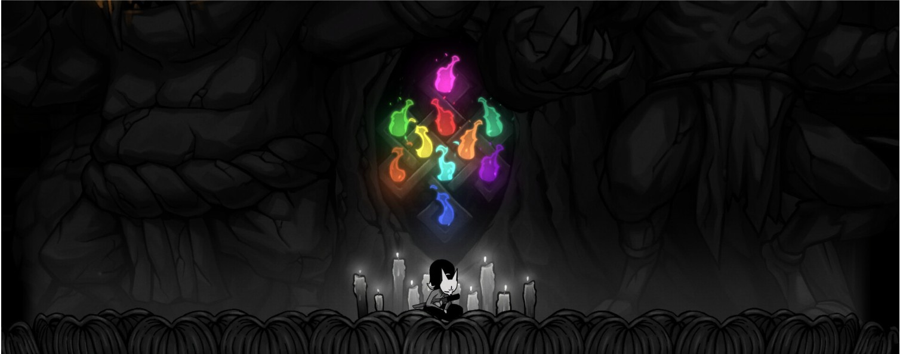

Noticias relevantes, calendario de grandes lanzamientos, análisis y reseñas con un toque único, escogidos personalmente para no hacerte perder el tiempo. Todo en un mismo lugar.

Las carreras desaparecen y solo quedan registros temporales. El cierre vuelve a poner el acceso a los juegos en primer plano.
Las noticias recientes más importantes de la industria de los videojuegos seleccionadas por relevancia y explicadas con contexto, fuentes verificadas y perspectiva.
Los lanzamientos más importantes de los próximos meses, siempre al día.
Algunas imágenes de juegos proceden de RAWG.
Fechas, plataformas, tráilers, imágenes y novedades reunidas en fichas que se actualizan a medida que sabemos más.
 Reservas abiertas
Reservas abiertas
La historia de Logan, su combate, sus personajes y todo lo confirmado antes del lanzamiento.
 Reservas abiertas
Reservas abiertas
La caída de Kalona, el origen del escuadrón Bravo y todo lo confirmado sobre la campaña y el multijugador.
 Reservas abiertas
Reservas abiertas
El regreso a Vice City con Jason y Lucia, precios oficiales, ediciones y todo lo que Rockstar ha confirmado.
 Reservas abiertas
Reservas abiertas
La aventura de Emma y Koo, el vínculo entre acción y órdenes y un mundo que cambia por efecto de la plaga.
 Reservas abiertas
Reservas abiertas
Veinte personajes, cross-play, historia, combate 4 contra 4 y todo el contenido confirmado para el estreno.
 Anunciado
Anunciado
La aventura de Faye en el Todotiempo, su combate, su historia y todo lo revelado por Santa Monica Studio.
 Reservas abiertas
Reservas abiertas
El regreso de Onimusha con Miyamoto Musashi, una demo disponible y un sistema de combate centrado en la espada.
 Reservas abiertas
Reservas abiertas
La historia de Dylan Faden en una Manhattan deformada, con fecha, plataformas y novedades confirmadas.
Análisis en profundidad de los juegos que voy terminando. Opinión personal, sin notas infladas.

Una magnífica puerta de entrada a la saga, con tinta, tesoros y equipamiento. El final secreto pide demasiadas horas extra.
Leer reseña
Diez Kami, arte dibujado a mano y una dificultad que crece con cada run. Correcto, pero café para cafeteros.
Leer reseñaDiez Kami, arte dibujado a mano y una dificultad que crece con cada run. Correcto, pero café para cafeteros.
Leer reseña